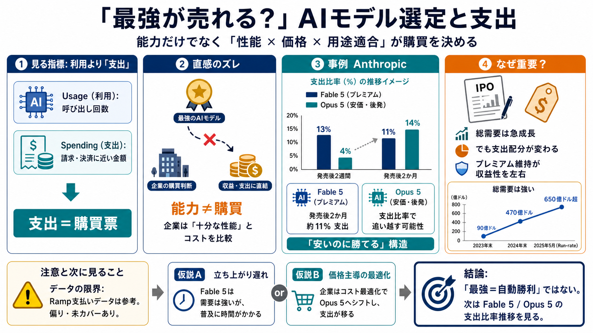

Anthropic Faces Setback As Fable 5 Struggles In Market
This trend is already having a ripple effect on Anthropic’s business. The company’s smaller and more affordable model, O…

「最強が売れる？」検証
生成AI市場で「高性能モデルが自動的に高売上を生む」とは限りません。この記事の鍵は、利用ではなく企業の支出（spending）がどのモデルに向かったかを追うことです。
直感のズレ
モデルの性能差はあっても、企業は「性能×価格×用途適合」を見て選びます。だから売上（実際の請求・決済）は、最強モデルに一直線で集まらない可能性があります。
支出は投票
同じ「利用（usage）」でも、単価が違えば企業が払う金額は変わります。支出データは買う意思に寄るため、モデル勝ち負けの解像度が上がります（ただし偏りも残る）。
Fable 5 健闘？
Ramp（金融データ）を通じたFinancial Timesの引用では、Anthropicの上位モデルFable 5が発売後2か月時点で、企業支出の約11%を占めた可能性があります。
Opus が追い越す
記事は、より安価なOpus 5が（7月末リリース後に）企業支出の比率でFable 5を追い越した可能性に触れています。能力差だけでなく価格×タスク充足が効いた可能性があります。
価格×需要の形
需要（総量）が伸びていても、上位モデルへの“支出配分”が薄まれば、売上の伸び方は変わります。記事のポイントは失速ではなく配分の変化を見極めることです。
IPOの圧
IPO準備（新規株式公開）の文脈では、成長だけでなく高価格帯が高いまま売れるかが問われます。支出の配分が変われば、将来の収益モデルに影響します。
成長は急
報道では、Anthropicの年換算売上ランレートが2025年末の約90億ドルから、5月で約470億ドル、7月末で650億ドル超に達したとされています。急成長でも、支出配分が別の動きをするのが論点です。
失速ではない
記事は「成長の失敗」と断じていません。重要なのは、プレミアムが一時的に止まっただけか、それとも安いモデルに仕事が寄る傾向が定着するかを、次の支出データで確かめることです。
競争が配分を変える
競争環境として、OpenAIのGPT 5.6がFable 5より安価に設定されているとも言及されています。比較検討が容易になるほど、企業の選好は十分性×コストに寄りやすくなります。
データの限界
Ramp支払いデータは有用な手がかりですが、どの企業・支払い経路・契約形態をカバーするかに偏りがあり得ます。支出比率が全体の能力や全使用量をそのまま表すとは限りません。
結論：価格×配分
Fable 5は発売直後の支出比率が期待ほど伸びない一方、より安価なOpus 5が後発で追い越した可能性が示されました。成長（総需要）があっても、支出の配分が上位に固定されるかが、投資家の見方と収益性を左右します。
This trend is already having a ripple effect on Anthropic’s business. The company’s smaller and more affordable model, O…
Anthropic's flagship AI model "Fable 5" is being shunned by enterprise customers, capturing just 11% of corporate spendi…
Two months after launch, Anthropic's flagship Fable 5 accounts for about 11% of what customers spend on Anthropic tools,…
aiweekly.co Ramp: Anthropic's Fable 5 Plateaus at 11% as Opus 5 Overtakes | AI Weekly Two months after launch, Ant…
Top Claude model on SWE-bench Pro: Fable 5 at 80.3%, Opus 5 below it at 79.2%, and the May 2027 forecast at p50 84.3% (p…